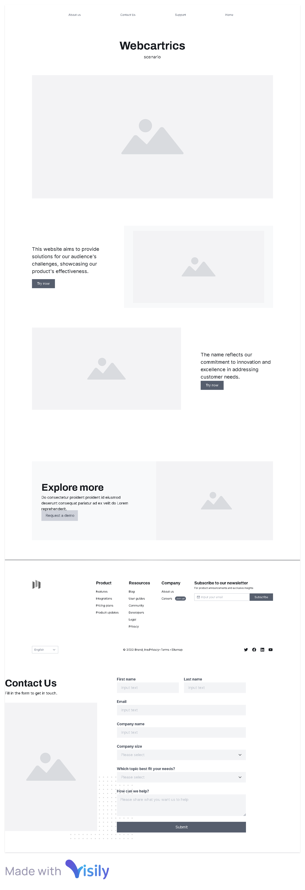
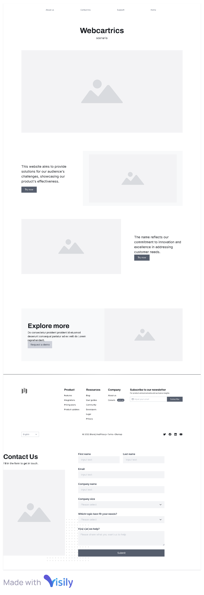

titulo do site: Webcartrics
O site será um pequeno portal informativo voltado para quem deseja entender melhor o que são carros elétricos e sua importância nos dias de hoje. O conteúdo será organizado de forma simples e direta, incluindo:
- Página Inicial: Uma visão geral sobre carros elétricos e sua crescente popularidade.
- Vantagens dos Carros Elétricos: Breve explicação sobre os benefícios, como economia de combustível, impacto ambiental reduzido e incentivos governamentais.
- Como Funcionam: Resumo básico sobre a tecnologia por trás dos carros elétricos, incluindo baterias e estações de recarga.
- Desafios Atuais: Informações sobre os principais desafios, como preços altos, infraestrutura de recarga e autonomia limitada.
- Contato: Página para receber dúvidas e sugestões.
Finalidade do Site
O mercado de carros elétricos está em rápida expansão, e muitas pessoas ainda têm dúvidas sobre essa tecnologia. Criar um site simples e informativo ajudará a desmistificar o tema e a conscientizar sobre a importância da transição para uma mobilidade mais sustentável. É uma forma prática de contribuir para a disseminação de informações sobre um futuro mais verde.
Cenários
- Como os carros elétricos podem mudar o futuro?
- Por que devemos substituir os carros a combustão por elétricos?
- Como não atingir o meio ambiente?
Cenario: Conteúdo
Página Inicial
Os carros elétricos estão se tornando cada vez mais populares devido à crescente preocupação com o meio ambiente e a busca por alternativas sustentáveis aos combustíveis fósseis. Eles oferecem uma solução eficiente e ecológica para o transporte, reduzindo a emissão de gases poluentes e a dependência de petróleo.
Vantagens dos Carros Elétricos
Os carros elétricos apresentam várias vantagens, incluindo:
- Economia de Combustível: Carros elétricos são mais eficientes em termos de energia e podem ser carregados a um custo menor em comparação com o abastecimento de gasolina ou diesel.
- Impacto Ambiental Reduzido: Eles produzem zero emissões diretas, ajudando a melhorar a qualidade do ar e a combater as mudanças climáticas.
- Incentivos Governamentais: Muitos governos oferecem incentivos fiscais e subsídios para a compra de veículos elétricos, tornando-os mais acessíveis.
Como Funcionam
Os carros elétricos utilizam baterias de íon-lítio para armazenar energia elétrica, que é usada para alimentar um motor elétrico. Eles podem ser recarregados em estações de recarga públicas ou em casa, e a tecnologia de recarga rápida permite que as baterias sejam carregadas em um curto período de tempo.
Desafios Atuais
Apesar das vantagens, os carros elétricos ainda enfrentam alguns desafios, como:
- Preços Altos: O custo inicial de compra de um carro elétrico pode ser mais alto em comparação com veículos a combustão.
- Infraestrutura de Recarga: A disponibilidade de estações de recarga ainda é limitada em algumas regiões, o que pode dificultar longas viagens.
- Autonomia Limitada: A autonomia dos carros elétricos pode ser menor em comparação com veículos a combustão.
Esquema de Cores
O esquema de cores refere-se às cores cuidadosamente selecionadas do site. Defina pelo menos duas cores e mostre onde cada cor selecionada será usada, como títulos, parágrafos, cores de fundo, acentos e assim por diante.
Exemplo:
- Cor 1: #248A6F (usada para o fundo do cabeçalho e rodapé)
- Cor 2: #F2A202 (usada para acentos e links de navegação)
- Cor 3: #E3EAEB (usada para o fundo do cabeçalho e rodapé)
- Cor 4: #C22929 (usada para fundo de imagens)
- Cor 5: #020100 (usada para margens e sobrefundos, painel de informação)
Tipografia
A seção de tipografia do documento de planejamento fornece exemplos das fontes a serem usadas e onde devem ser aplicadas. Nada menos que uma fonte e não mais do que três seleções de fontes precisam ser selecionadas. Indique onde cada fonte selecionada será usada (como títulos, corpo e assim por diante).
Exemplo:
- Fonte 1: 'Roboto', sans-serif (usada para o corpo do texto)
- Fonte 2: 'Roboto', sans-serif (usada para títulos e cabeçalhos)
Wireframe
 
